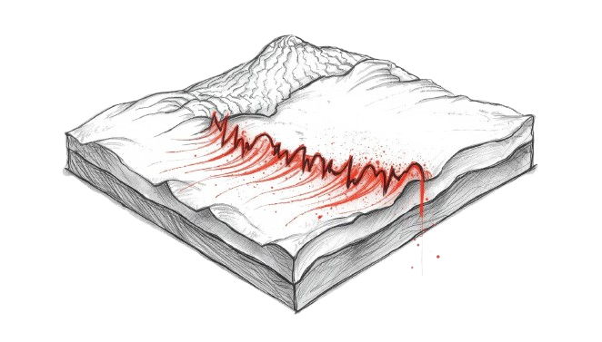
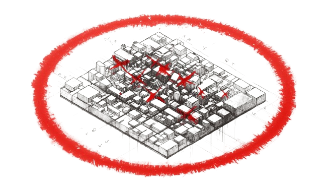
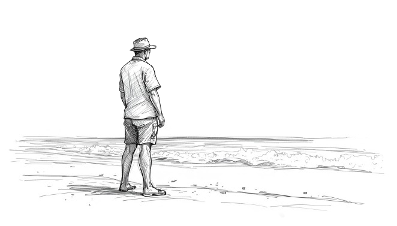
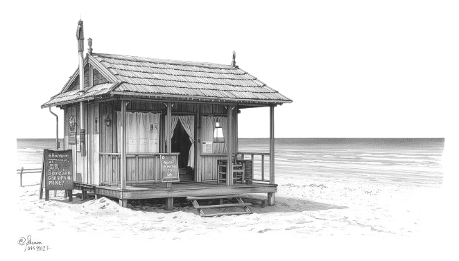
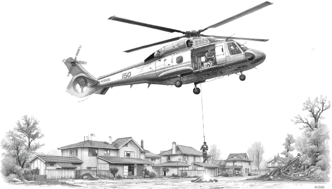

1. システムの全体概要1. System Overview1. 系统总体概述1. 시스템 전체 개요1. Descripción General del Sistema1. Vue d'Ensemble du Système
System Overview & Architecture
本システムは、鎌倉市沿岸部における大規模な津波避難を対象としたマルチエージェント・シミュレーションです。
単なる「最短経路の探索」にとどまらず、「周囲への同調行動（パニックの伝染）」や、地形・混雑による「物理的な歩行速度の低下」を数学的モデルで再現します。
This system is a multi-agent simulation targeting large-scale tsunami evacuation along Kamakura's coastline. Beyond mere "shortest path search," it mathematically reproduces herd behavior (panic contagion) and physical speed reduction due to terrain and congestion.
本系统是针对镰仓市沿海地区大规模海啸避难的多智能体模拟。不仅仅是"最短路径搜索"，还通过数学模型再现了从众行为（恐慌传染）以及因地形和拥堵导致的物理步行速度下降。
본 시스템은 가마쿠라시 해안부의 대규모 쓰나미 대피를 대상으로 한 멀티에이전트 시뮬레이션입니다. 단순한 "최단 경로 탐색"에 그치지 않고, 동조 행동(패닉 전염)과 지형·혼잡에 의한 물리적 보행 속도 저하를 수학 모델로 재현합니다.
Este sistema es una simulación multi-agente de evacuación masiva ante tsunamis en la costa de Kamakura. Más allá de la "búsqueda de la ruta más corta," reproduce matemáticamente el comportamiento gregario (contagio de pánico) y la reducción física de velocidad por terreno y congestión.
Ce système est une simulation multi-agents ciblant l'évacuation massive face au tsunami sur la côte de Kamakura. Au-delà de la "recherche du plus court chemin," il reproduit mathématiquement le comportement grégaire (contagion de panique) et la réduction physique de vitesse due au terrain et à la congestion.

並列計算処理システムParallel Processing System并行计算处理系统병렬 계산 처리 시스템Sistema de Procesamiento ParaleloSystème de Traitement Parallèle
数万人の「周囲の状況把握」と「経路選択」を、複数の頭脳（マルチプロセッシング機構）を用いて並行して計算処理することで、膨大なシミュレーションを高速に行います。Tens of thousands of agents' "situational awareness" and "route selection" are computed simultaneously using multi-processing, enabling massive simulations at high speed.通过多处理器机制并行计算数万人的"周围状况感知"和"路径选择"，高速执行庞大的模拟。수만 명의 "주변 상황 파악"과 "경로 선택"을 복수의 프로세서를 이용하여 병렬 계산함으로써 방대한 시뮬레이션을 고속으로 수행합니다.La "percepción situacional" y "selección de rutas" de decenas de miles de agentes se computan simultáneamente mediante multiprocesamiento, realizando simulaciones masivas a alta velocidad.La "conscience situationnelle" et la "sélection de routes" de dizaines de milliers d'agents sont calculées simultanément via le multitraitement, permettant des simulations massives à haute vitesse.

独立したモジュール構成Modular Architecture独立的模块构成독립적 모듈 구성Arquitectura ModularArchitecture Modulaire
設定管理、データ読み込み、計算の実行、画面の描画など、役割ごとにプログラムファイルが美しく分割されており、高い拡張性を備えています。Program files are cleanly separated by role — config management, data loading, computation, and rendering — ensuring high extensibility.配置管理、数据加载、计算执行、画面渲染等各职能的程序文件进行了清晰分割，具备高度可扩展性。설정 관리, 데이터 로딩, 계산 실행, 화면 렌더링 등 역할별로 프로그램 파일이 명확히 분리되어 있어 높은 확장성을 갖추고 있습니다.Los archivos de programa están separados limpiamente por rol — gestión de configuración, carga de datos, cálculo y renderizado — garantizando alta extensibilidad.Les fichiers de programme sont clairement séparés par rôle — gestion de configuration, chargement de données, calcul et rendu — assurant une haute extensibilité.
2. 空間データと情報の仕組み2. Spatial Data & Information2. 空间数据与信息结构2. 공간 데이터와 정보 구조2. Datos Espaciales e Información2. Données Spatiales et Information
Data Structures & Maps
-

空間ネットワークデータの構築Building Spatial Network Data空间网络数据的构建공간 네트워크 데이터 구축Construcción de Red EspacialConstruction du Réseau Spatial
鎌倉の道路の長さ、道幅、標高、そして「浸水予測域」や「指定避難所」の情報をネットワークデータとして統合し、正確な避難空間を構築しています。Road length, width, elevation, "predicted flood zones," and "designated shelters" in Kamakura are integrated as network data to build an accurate evacuation space.将镰仓道路的长度、宽度、海拔以及"预测浸水区域"和"指定避难所"信息整合为网络数据，构建精确的避难空间。가마쿠라의 도로 길이, 폭, 표고, "침수 예측 구역", "지정 대피소" 정보를 네트워크 데이터로 통합하여 정확한 대피 공간을 구축합니다.La longitud, ancho, elevación de carreteras, "zonas de inundación previstas" y "refugios designados" de Kamakura se integran como datos de red para construir un espacio de evacuación preciso.La longueur, largeur, altitude des routes, les "zones d'inondation prévues" et "abris désignés" de Kamakura sont intégrés en données réseau pour construire un espace d'évacuation précis.
-
統計データに基づく人口配置Statistical Population Placement基于统计数据的人口配置통계 데이터에 기반한 인구 배치Distribución Poblacional EstadísticaPlacement Statistique de la Population
国勢調査などの客観的な統計データに基づき、観光客や地域住民など数万人を、実際の地理に合わせて正確な位置へ初期配置します。Based on objective statistical data like census records, tens of thousands of tourists and residents are initially placed at geographically accurate positions.基于国势调查等客观统计数据，将游客和地区居民等数万人精确配置到符合实际地理位置的初始位置。국세 조사 등 객관적 통계 데이터를 기반으로 관광객·지역 주민 등 수만 명을 실제 지리에 맞게 정확한 위치에 초기 배치합니다.Basándose en datos estadísticos objetivos como censos, decenas de miles de turistas y residentes son inicialmente ubicados en posiciones geográficamente precisas.Sur la base de données statistiques objectives comme le recensement, des dizaines de milliers de touristes et résidents sont placés à des positions géographiquement précises.
-
高圧縮ログと描画データCompressed Logs & Rendering Data高压缩日志与渲染数据고압축 로그와 렌더링 데이터Registros Comprimidos y Datos de RenderizadoJournaux Compressés et Données de Rendu
計算された膨大な履歴は、分析に適した高圧縮フォーマットで保存されます。ブラウザでの動画再生用には、極限まで軽量化された数値データへと変換されて配信されます。Computed histories are stored in a highly compressed format optimized for analysis. For browser playback, they are converted into maximally lightweight numerical data.计算所得的庞大历史记录以适合分析的高压缩格式保存。用于浏览器视频播放时，会转换为极度轻量化的数值数据进行配送。계산된 방대한 이력은 분석에 적합한 고압축 포맷으로 저장됩니다. 브라우저 동영상 재생용으로는 극한까지 경량화된 수치 데이터로 변환되어 배포됩니다.Los historiales computados se almacenan en formato altamente comprimido optimizado para análisis. Para reproducción en navegador, se convierten en datos numéricos máximamente ligeros.Les historiques calculés sont stockés dans un format hautement compressé optimisé pour l'analyse. Pour la lecture dans le navigateur, ils sont convertis en données numériques maximalement légères.
3. 登場人物の特性と行動仕様3. Agent Profiles3. 角色特性与行动规范3. 등장인물 특성과 행동 사양3. Perfiles de Agentes3. Profils des Agents
Agent Profiles
全10種類の属性10 Agent Types共10种属性총 10가지 속성10 Tipos de Agentes10 Types d'Agents
国勢調査と推計に基づき、一般観光客や地域住民、ライフガードなどの属性が割り当てられます。「海沿いの属性」は津波フラッグ等の視覚的情報に反応しやすくなります。Based on census data and estimates, attributes like general tourists, local residents, and lifeguards are assigned. "Coastal" agents respond more readily to visual cues like tsunami flags.基于国势调查和推算，分配一般游客、地区居民、救生员等属性。"海边属性"对海啸旗帜等视觉信息的反应更为灵敏。국세 조사와 추계를 바탕으로 일반 관광객, 지역 주민, 라이프가드 등의 속성이 부여됩니다. "해변 속성"은 쓰나미 깃발 등 시각적 정보에 반응하기 쉽습니다.Basándose en datos censales, se asignan atributos como turistas generales, residentes locales y socorristas. Los agentes "costeros" responden más fácilmente a señales visuales como banderas de tsunami.Basés sur des données de recensement, des attributs comme touristes généraux, résidents locaux et sauveteurs sont assignés. Les agents "côtiers" répondent plus facilement aux signaux visuels comme les drapeaux de tsunami.
避難の「遅れ」設定Evacuation Delay Settings避难"延迟"设置대피 "지연" 설정Configuración del Retraso de EvacuaciónParamétrage du Délai d'Évacuation
地震発生から逃げ始めるまでの待機時間を、即時避難（平均2.5分）、準備避難（平均4.0分）、同調避難（平均5.0分）など、現実的な確率分布で設定しています。Wait times from earthquake onset to evacuation start are set with realistic probability distributions: immediate (avg 2.5 min), preparatory (avg 4.0 min), and herd evacuation (avg 5.0 min).从地震发生到开始逃跑的等待时间，以现实的概率分布设定，分为立即避难（平均2.5分钟）、准备避难（平均4.0分钟）、从众避难（平均5.0分钟）等。지진 발생부터 도망 시작까지의 대기 시간을 즉시 대피(평균 2.5분), 준비 대피(평균 4.0분), 동조 대피(평균 5.0분) 등 현실적인 확률 분포로 설정합니다.Los tiempos de espera desde el inicio del sismo hasta la evacuación se establecen con distribuciones de probabilidad realistas: inmediata (prom. 2.5 min), preparatoria (prom. 4.0 min) y gregaria (prom. 5.0 min).Les temps d'attente entre le séisme et le début de l'évacuation sont définis avec des distributions probabilistes réalistes : immédiate (moy. 2,5 min), préparatoire (moy. 4,0 min) et grégaire (moy. 5,0 min).
ベースとなる歩行速度Base Walking Speed基础步行速度기본 보행 속도Velocidad Base de MarchaVitesse de Marche de Base
各エージェントには確率で、基本となる身体的スピード（児童ペース、成人ペース、高齢者ペース）が個別に割り当てられます。Each agent is probabilistically assigned a base physical speed: child pace, adult pace, or elderly pace.每个智能体以概率分配基本的身体速度（儿童速度、成人速度、老年人速度）。각 에이전트에는 확률적으로 기본이 되는 신체적 속도(어린이 속도, 성인 속도, 노인 속도)가 개별 부여됩니다.A cada agente se le asigna probabilísticamente una velocidad física base: paso de niño, paso de adulto o paso de anciano.Chaque agent se voit attribuer probabilistiquement une vitesse physique de base : allure enfant, allure adulte ou allure personne âgée.

プロの警告（声掛け）機能Professional Warning Function专业人员警告（呼喊）功能전문가 경고(알림) 기능Función de Alerta ProfesionalFonction d'Alerte Professionnelle
ライフガードや警察官は自身が逃げながら定期的に声掛けを行い、声を聞いた周囲の一般人の危機感を強制的に引き上げて早期避難を促します。Lifeguards and police officers periodically alert bystanders while evacuating themselves, forcibly raising crisis levels of nearby civilians to encourage early evacuation.救生员和警察在自己逃跑的同时定期呼喊，强制提升听到声音的周围普通人的危机感，促进早期避难。라이프가드와 경찰관은 스스로 도망치면서도 정기적으로 주변에 경고를 하여, 이를 들은 주변 일반인의 위기감을 강제로 높여 조기 대피를 촉진합니다.Los socorristas y policías alertan periódicamente a los civiles mientras evacuan, elevando forzosamente los niveles de crisis de los civiles cercanos para promover la evacuación temprana.Les sauveteurs et policiers alertent périodiquement les civils tout en évacuant eux-mêmes, élevant de force les niveaux de crise des civils proches pour encourager l'évacuation précoce.
4. 現実世界の物理的な移動制約4. Physical Movement Constraints4. 现实世界的物理移动约束4. 현실 세계의 물리적 이동 제약4. Restricciones Físicas de Movimiento4. Contraintes Physiques de Déplacement
Physical Constraints Models
避難時の歩行速度は、基本速度に対し、「混雑」と「地形」による2つの速度低下モデルを掛け合わせて毎秒算出されます。（カードをクリックしてアニメーションを確認👇）Evacuation walking speed is calculated every second by multiplying the base speed by two reduction models: "congestion" and "terrain." (Click cards to view animations 👇)避难时的步行速度，通过将基本速度与"拥堵"和"地形"两种速度下降模型相乘，每秒计算一次。（点击卡片查看动画👇）대피 시 보행 속도는 기본 속도에 "혼잡"과 "지형"에 의한 두 가지 속도 저하 모델을 곱하여 매초 산출됩니다. （카드를 클릭하여 애니메이션 확인👇）La velocidad de marcha durante la evacuación se calcula cada segundo multiplicando la velocidad base por dos modelos de reducción: "congestión" y "terreno." (Haz clic en las tarjetas para ver animaciones 👇)La vitesse de marche pendant l'évacuation est calculée chaque seconde en multipliant la vitesse de base par deux modèles de réduction : "congestion" et "terrain." (Cliquez sur les cartes pour voir les animations 👇)
-
▶ クリックで図解Click to Animate点击查看클릭하여 확인Clic para VerCliquer pour Voir
.png)
渋滞による歩行速度低下の数理モデルTraffic Congestion Speed Reduction Model拥堵导致步行速度下降的数理模型정체로 인한 보행 속도 저하 수리 모델Modelo Matemático de Reducción por CongestiónModèle Mathématique de Réduction par Congestion
道路の面積に対して人が集中しすぎると歩行速度が低下します。限界密度に達すると進行速度がゼロになる「デッドロック」が発生する様子をモデル化しています。When people concentrate beyond a road's capacity, walking speed drops. The model reproduces "deadlock" where movement hits zero at critical density.当人员过度集中于道路面积时，步行速度下降。模型再现了密度达到极限时移动速度归零的"死锁"现象。도로 면적에 비해 사람이 지나치게 집중되면 보행 속도가 저하됩니다. 한계 밀도에 달하면 진행 속도가 제로가 되는 "데드락" 발생을 모델화합니다.Cuando las personas se concentran más allá de la capacidad de la carretera, la velocidad disminuye. El modelo reproduce el "deadlock" donde el movimiento llega a cero en densidad crítica.Quand les personnes se concentrent au-delà de la capacité d'une route, la vitesse chute. Le modèle reproduit le "deadlock" où le mouvement atteint zéro à la densité critique.
\( 速度乗数 = \max\left(0,\; 1 - \dfrac{\rho}{\rho_{limit}}\right) \) -
▶ クリックで図解Click to Animate点击查看클릭하여 확인Clic para VerCliquer pour Voir
地形（勾配）に伴う歩行速度変化モデルTerrain Gradient Speed Change Model地形（坡度）导致步行速度变化的模型지형(경사)에 따른 보행 속도 변화 모델Modelo de Cambio de Velocidad por Gradiente TopográficoModèle de Variation de Vitesse par Gradient Topographique
急な上り坂では進行スピードが物理的に落ち、緩やかな下り坂では最速で移動できるという、重力と人間の生体力学に基づいた速度補正を行っています。Speed drops physically on steep ascents, while gradual descents allow maximum movement — a gravity and biomechanics-based correction.在陡峭的上坡上，前进速度会物理性下降，而在缓坡下坡上可以最快速度移动——这是基于重力和人体生物力学的速度补正。가파른 오르막에서는 진행 속도가 물리적으로 떨어지고, 완만한 내리막에서는 최고 속도로 이동할 수 있다는 중력과 생체역학에 기반한 속도 보정을 수행합니다.La velocidad cae físicamente en subidas pronunciadas, mientras los descensos suaves permiten movimiento máximo — corrección basada en gravedad y biomecánica.La vitesse chute physiquement dans les montées prononcées, tandis que les descentes douces permettent le mouvement maximal — correction basée sur la gravité et la biomécanique.
\( 速度乗数 = \exp(-3.5 \cdot |S + 0.05| + 0.175) \)
5. 心理状態と情報の伝播5. Psychological Models5. 心理状态与信息传播5. 심리 상태와 정보 전파5. Modelos Psicológicos5. Modèles Psychologiques
Psychological Models
各個人は 0.0〜1.0 の間で変動する危機感（Crisis Level）を持ち、これによって歩くペースや行動パターンが大きく変化します。Each individual has a Crisis Level fluctuating between 0.0 and 1.0, which dramatically affects their walking pace and behavior patterns.每个人拥有在0.0到1.0之间变动的危机感（Crisis Level），这会极大地影响其步行节奏和行动模式。각 개인은 0.0~1.0 사이에서 변동하는 위기감(Crisis Level)을 가지며, 이것이 보행 속도와 행동 패턴을 크게 변화시킵니다.Cada individuo tiene un Nivel de Crisis que fluctúa entre 0.0 y 1.0, afectando dramáticamente su ritmo de marcha y patrones de comportamiento.Chaque individu a un Niveau de Crise fluctuant entre 0.0 et 1.0, affectant dramatiquement son rythme de marche et ses patterns de comportement.
危機感と速度のギアチェンジCrisis Level & Speed Gear Change危机感与速度的档位变化위기감과 속도의 기어 체인지Nivel de Crisis y Cambio de MarchaNiveau de Crise et Changement de Vitesse
危険の認識が低い時は歩幅が遅く、危機感が高まるにつれて早歩きになり、パニック状態（0.8以上）に達すると全速力で走って逃げます。Low danger awareness means slow walking; as crisis level rises agents walk faster; at panic state (0.8+) they run at full speed.危险认知低时步速缓慢，随着危机感升高逐渐加快步伐，达到恐慌状态（0.8以上）时全速奔跑逃离。위험 인식이 낮을 때는 걸음이 느리고, 위기감이 높아질수록 빠른 걸음이 되며, 패닉 상태(0.8 이상)에 달하면 전력으로 뛰어 도망칩니다.Con baja percepción de peligro el agente camina lento; al aumentar la crisis acelera; en pánico (0.8+) corre a máxima velocidad.Faible perception du danger = marche lente ; à mesure que la crise monte, marche rapide ; en état de panique (0,8+) course à pleine vitesse.
外部情報の受け取りReceiving External Information外部信息的接收외부 정보 수신Recepción de Información ExternaRéception d'Informations Externes
スマホの緊急速報の受信や、海岸での津波フラッグの視認、パニックで走る人を見ることで、人々の危機感は即座に引き上げられます。Receiving emergency alerts on smartphones, spotting tsunami flags, or seeing panicking runners immediately raises people's crisis levels.收到手机紧急速报、在海岸看到海啸旗帜、看到因恐慌奔跑的人，都会立即提升人们的危机感。스마트폰 긴급 경보 수신, 해안의 쓰나미 깃발 시인, 패닉으로 달리는 사람을 보는 것으로 사람들의 위기감은 즉시 높아집니다.Recibir alertas de emergencia, ver banderas de tsunami o ver personas corriendo en pánico eleva inmediatamente los niveles de crisis.Recevoir des alertes d'urgence, apercevoir des drapeaux tsunami ou voir des gens courir en panique élève immédiatement les niveaux de crise.
群集心理と「同調行動」Crowd Psychology & "Herd Behavior"群体心理与"从众行动"군중 심리와 "동조 행동"Psicología de Masas y "Comportamiento de Manada"Psychologie des Foules et "Comportement Grégaire"
視野内の多くの人が焦って走っているのを見ると、論理的で安全な道を捨て、無意識に「すでに混雑している人の流れ」に引き込まれてしまうという危険な現象を再現しています。Seeing many people run in one's field of view causes agents to abandon safe logical routes and be unconsciously drawn into already-congested flows.当看到视野内许多人焦急地奔跑时，会抛弃逻辑上安全的道路，被无意识地卷入"已经拥挤的人流"——这种危险现象被再现出来。시야 내 많은 사람이 초조하게 달리는 것을 보면, 논리적으로 안전한 길을 버리고 무의식적으로 "이미 혼잡한 인파의 흐름"에 끌려드는 위험한 현상을 재현합니다.Ver a muchas personas correr hace que los agentes abandonen rutas seguras y sean arrastrados inconscientemente hacia flujos ya congestionados.Voir de nombreuses personnes courir pousse les agents à abandonner les routes sûres et à être inconsciemment attirés vers des flux déjà encombrés.
6. 避難アルゴリズムと高速計算6. Evacuation Algorithm & High-Speed Computation6. 避难算法与高速计算6. 대피 알고리즘과 고속 계산6. Algoritmo de Evacuación y Cálculo6. Algorithme d'Évacuation et Calcul Rapide
Core Engine Architecture
4つの行動モード4 Behavioral Modes4种行动模式4가지 행동 모드4 Modos de Comportamiento4 Modes de Comportement
エージェントは状況に応じて、「最短経路」「自律的探索」「避難所直行」「同調追従」の4つのアルゴリズムを切り替えながら避難経路を選択します。Agents switch between 4 algorithms based on situation: "shortest path," "autonomous search," "direct to shelter," and "herd following."智能体根据情况切换"最短路径"、"自律探索"、"直奔避难所"、"从众追随"4种算法来选择避难路线。에이전트는 상황에 따라 "최단 경로", "자율적 탐색", "대피소 직행", "동조 추종"의 4가지 알고리즘을 전환하면서 대피 경로를 선택합니다.Los agentes alternan entre 4 algoritmos según la situación: "ruta más corta," "búsqueda autónoma," "directo al refugio" y "seguimiento gregario."Les agents alternent entre 4 algorithmes selon la situation : "chemin le plus court," "recherche autonome," "direct vers l'abri" et "suivi grégaire."
空間レーダー技術Spatial Radar Technology空间雷达技术공간 레이더 기술Tecnología de Radar EspacialTechnologie Radar Spatial
数万人が「自身の視界に誰がいるか」を毎秒計算するため、空間を効率的に探索するインデックス技術を採用し、処理を高速化しています。To compute "who is in each agent's field of view" every second for tens of thousands, a spatial indexing technology is used to accelerate processing.为了让数万人每秒计算"自己视野内有谁"，采用了高效探索空间的索引技术，加速处理速度。수만 명이 매초 "자신의 시야에 누가 있는지"를 계산하기 위해, 공간을 효율적으로 탐색하는 인덱스 기술을 채용하여 처리를 고속화합니다.Para calcular cada segundo "quién está en el campo de visión de cada agente" para decenas de miles, se usa indexación espacial para acelerar el procesamiento.Pour calculer chaque seconde "qui est dans le champ de vision" de chaque agent parmi des dizaines de milliers, une technologie d'indexation spatiale accélère le traitement.
自動連続実験（What-If分析）Automated Experiments (What-If Analysis)自动连续实验（What-If分析）자동 연속 실험 (What-If 분석)Experimentos Automatizados (Análisis What-If)Expériences Automatisées (Analyse What-If)
「スマホ所持率を100%にする」等の設定を複数登録でき、コンピュータが自動で何度もシミュレーションを連続実行し、データを保存します。Multiple configurations like "set smartphone ownership to 100%" can be registered, and the computer automatically runs simulations repeatedly, saving all data.可以登录多项设置（如"将手机持有率设为100%"），电脑自动反复连续运行模拟并保存数据。"스마트폰 소지율을 100%로 설정" 등 복수의 설정을 등록하면, 컴퓨터가 자동으로 반복해서 시뮬레이션을 연속 실행하고 데이터를 저장합니다.Se pueden registrar múltiples configuraciones como "establecer posesión de smartphones al 100%," y el ordenador ejecuta automáticamente simulaciones repetidamente guardando todos los datos.Plusieurs configurations comme "définir la possession de smartphones à 100%" peuvent être enregistrées, et l'ordinateur exécute automatiquement les simulations en boucle en sauvegardant toutes les données.
7. UI・可視化ダッシュボード7. UI & Visualization Dashboard7. UI·可视化仪表板7. UI·시각화 대시보드7. Interfaz y Panel de Visualización7. Interface et Tableau de Bord de Visualisation
User Interface & Visualization
コントロールパネルControl Panel控制面板컨트롤 패널Panel de ControlPanneau de Contrôle
Webブラウザの画面から、人数割合や初期の行動モードなど、多数のパラメータを直感的なスライダー操作で調整し、シミュレーションへ反映させることができます。From the web browser, numerous parameters like population ratios and initial behavior modes can be adjusted with intuitive sliders and reflected in the simulation.可以从网络浏览器界面，通过直观的滑块操作调整人数比例、初始行动模式等众多参数，并反映到模拟中。웹 브라우저 화면에서 인원 비율, 초기 행동 모드 등 다수의 파라미터를 직관적인 슬라이더 조작으로 조정하여 시뮬레이션에 반영할 수 있습니다.Desde el navegador web, numerosos parámetros como proporciones de población y modos de comportamiento inicial pueden ajustarse con controles deslizantes intuitivos y reflejarse en la simulación.Depuis le navigateur web, de nombreux paramètres comme les ratios de population et les modes de comportement initiaux peuvent être ajustés avec des curseurs intuitifs et reflétés dans la simulation.
3Dタイムラプス動画3D Time-Lapse Video3D延时视频3D 타임랩스 영상Vídeo Time-Lapse 3DVidéo Timelapse 3D
結果は滑らかな3Dマップ上で再生されます。人々の「危機感」を円の大きさで表し、「同調行動」を起こしている人を黄色の枠線でハイライトします。Results play on a smooth 3D map. People's "crisis level" is shown by circle size; those exhibiting "herd behavior" are highlighted with yellow outlines.结果在流畅的3D地图上播放。用圆圈大小表示人们的"危机感"，用黄色边框高亮显示发生"从众行为"的人。결과는 부드러운 3D 맵 위에서 재생됩니다. 사람들의 "위기감"을 원의 크기로 표현하고, "동조 행동"을 일으키고 있는 사람을 노란 테두리로 하이라이트합니다.Los resultados se reproducen en un mapa 3D fluido. El "nivel de crisis" se muestra por tamaño de círculo; los que exhiben "comportamiento gregario" se resaltan con contornos amarillos.Les résultats se jouent sur une carte 3D fluide. Le "niveau de crise" est représenté par la taille des cercles ; ceux montrant un "comportement grégaire" sont mis en évidence par des contours jaunes.
自動集計分析グラフAutomated Analytics Graphs自动统计分析图表자동 집계 분석 그래프Gráficos Analíticos AutomáticosGraphiques Analytiques Automatisés
時間の経過に伴う「フェーズ推移」、全体の「同調率の相関」、属性ごとの「生存率」などが美しいグラフとして自動で生成されます。Phase transitions over time, overall herd rate correlations, and survival rates by agent type are automatically generated as elegant graphs.随时间推移的"阶段推移"、整体"从众率相关性"、各属性的"生存率"等自动生成为精美的图表。시간 경과에 따른 "페이즈 추이", 전체 "동조율 상관관계", 속성별 "생존율" 등이 아름다운 그래프로 자동 생성됩니다.Las transiciones de fase temporales, correlaciones de tasa gregaria global y tasas de supervivencia por tipo se generan automáticamente como gráficos elegantes.Les transitions de phase temporelles, les corrélations de taux grégaire global et les taux de survie par type sont automatiquement générés sous forme de graphiques élégants.
8. 結論と今後の展望8. Findings & Future Directions8. 结论与未来展望8. 결론과 향후 전망8. Conclusiones y Perspectivas8. Conclusions et Perspectives
Findings & Future Directions
シミュレーションで得られた最も重要な知見は、「情報格差が生存率格差を生む」という事実です。適切な情報を与えられた観光客の生存率は、地元住民に近い水準まで向上します。The most important finding from the simulation is that "information disparity creates survival rate disparity." Tourists given appropriate information see survival rates rise to near local resident levels.模拟得出的最重要知见是"信息差距产生生存率差距"这一事实。获得适当信息的游客，生存率可提升到接近当地居民的水平。시뮬레이션에서 얻은 가장 중요한 지견은 "정보 격차가 생존율 격차를 낳는다"는 사실입니다. 적절한 정보를 받은 관광객의 생존율은 지역 주민에 가까운 수준까지 향상됩니다.El hallazgo más importante de la simulación es que "la disparidad de información crea disparidad en la tasa de supervivencia." Los turistas con información adecuada ven sus tasas de supervivencia elevarse al nivel de los residentes locales.Le résultat le plus important de la simulation est que "la disparité d'information crée une disparité de taux de survie." Les touristes bien informés voient leurs taux de survie s'élever au niveau des résidents locaux.
最適経路アプリの開発Optimal Route App Development最优路径应用开发최적 경로 앱 개발Desarrollo de App de Ruta ÓptimaDéveloppement d'App d'Itinéraire Optimal
避難者に最適な経路を提案できるスマートフォンアプリの開発へ。誰もが持っているスマートフォンが、命を救うインフラになれます。Toward developing a smartphone app that suggests optimal evacuation routes. The smartphone everyone carries can become life-saving infrastructure.致力于开发能向避难者提供最优路线的智能手机应用。人人都有的智能手机可以成为拯救生命的基础设施。대피자에게 최적 경로를 제안할 수 있는 스마트폰 앱 개발로. 누구나 가지고 있는 스마트폰이 생명을 구하는 인프라가 될 수 있습니다.Hacia el desarrollo de una app de smartphone que sugiera rutas de evacuación óptimas. El smartphone que todos tienen puede convertirse en infraestructura que salva vidas.Vers le développement d'une app smartphone suggérant des itinéraires d'évacuation optimaux. Le smartphone que tous possèdent peut devenir une infrastructure qui sauve des vies.
観光客の命を守るProtecting Tourists' Lives守护游客的生命관광객의 생명을 지키다Proteger las Vidas de los TuristasProtéger les Vies des Touristes
シミュレーションで得られた知見から、観光客が地元民と同等の避難をできる情報提供アプリの開発を通じて、減災に取り組みます。Leveraging simulation insights to develop an information app enabling tourists to evacuate as effectively as locals, contributing to disaster risk reduction.利用模拟获得的知见，通过开发能使游客与当地居民同等避难的信息提供应用，致力于减灾工作。시뮬레이션에서 얻은 지견을 바탕으로, 관광객이 지역민과 동등하게 대피할 수 있는 정보 제공 앱 개발을 통해 감재에 임합니다.Aprovechando los conocimientos de la simulación para desarrollar una app que permita a los turistas evacuar tan eficazmente como los locales, contribuyendo a la reducción del riesgo de desastres.En exploitant les résultats de la simulation pour développer une app permettant aux touristes d'évacuer aussi efficacement que les locaux, contribuant à la réduction des risques de catastrophes.
政策立案への貢献Contributing to Policy-Making对政策制定的贡献정책 수립에의 공헌Contribución a la Formulación de PolíticasContribution à l'Élaboration de Politiques
避難路のボトルネック特定、避難誘導員の最適配置、警報タイミングの検証など、行政の意思決定を支援するデータ基盤を提供します。Providing a data foundation supporting administrative decision-making: identifying evacuation bottlenecks, optimally placing guides, and verifying warning timings.提供支援行政决策的数据基础：识别避难路瓶颈、最优配置避难引导员、验证警报时机等。대피로 병목 특정, 대피 유도원 최적 배치, 경보 타이밍 검증 등 행정 의사결정을 지원하는 데이터 기반을 제공합니다.Proporcionando una base de datos que apoya la toma de decisiones administrativas: identificar cuellos de botella, ubicar guías óptimamente y verificar tiempos de alerta.Fournissant une base de données soutenant la prise de décision administrative : identifier les goulots d'étranglement, placer les guides de façon optimale, vérifier les timings d'alerte.

救助・レスキュー活動の最適化Optimizing Rescue Operations救援·搜救活动的优化구조·레스큐 활동 최적화Optimización de Operaciones de RescateOptimisation des Opérations de Secours
ヘリコプターや救助隊の活動エリアと、シミュレーション上の「取り残されたエージェント分布」を重ね合わせることで、救助リソースの最適な配置計画を導き出す研究への応用を目指します。By overlaying helicopter and rescue team operation areas with simulated "stranded agent distributions," the goal is to derive optimal rescue resource deployment plans.通过将直升机和救援队的活动区域与模拟上的"被遗留智能体分布"叠加，旨在推导出救援资源最优配置计划的研究应用。헬리콥터와 구조대의 활동 구역과 시뮬레이션 상의 "남겨진 에이전트 분포"를 중첩시킴으로써, 구조 자원의 최적 배치 계획을 도출하는 연구에 응용하는 것을 목표로 합니다.Superponiendo las áreas de operación de helicópteros y equipos de rescate con las "distribuciones de agentes varados" simuladas, el objetivo es derivar planes óptimos de despliegue de recursos de rescate.En superposant les zones d'opération des hélicoptères et équipes de secours avec les "distributions d'agents bloqués" simulées, l'objectif est de dériver des plans de déploiement optimaux des ressources de secours.